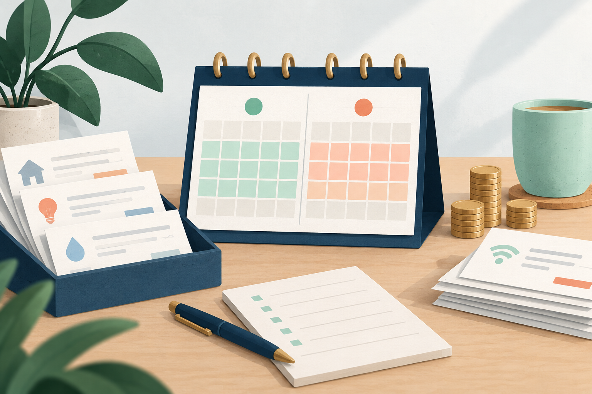

Planificación quincenal
Cómo organizar tus pagos por quincena cuando no coinciden con el salario
Dos quincenas con el mismo ingreso pueden necesitar cantidades distintas. Ordena primero las fechas y comprueba qué dinero debe llegar de una quincena a la siguiente.

Ejemplo educativo con importes ficticios en una misma moneda. El día 1 representa hoy.
1. Dibuja el período real entre cobros
Tomás recibe su salario el día 15 y el último día del mes. Un servicio vence el día 12, así que no puede contar con el salario del 15 para cubrirlo a tiempo. Llamar «quincena» al período no cambia ese orden.
En CashPlan, «Quincenal» significa 15 días incluyendo hoy, no del 1 al 15. Usa «Fecha personalizada» cuando necesites llegar a una fecha concreta. La opción mensual cuenta 30 días y tampoco representa siempre un mes de calendario.
2. Registra también los días anteriores al salario
Para un ejemplo relativo a hoy, Tomás tiene 220 y cobrará 500 el día 6. Sus próximos pagos son los siguientes:
| Día | Movimiento | Saldo de cierre |
|---|---|---|
| 1 | Saldo inicial | 220 |
| 2 | Servicio: −160 | 60 |
| 4 | Transporte: −35 | 25 |
| 5 | Compra de alimentos: −50 | −25 |
| 6 | Salario: +500 | 475 |
| 8 | Alquiler: −300 | 175 |
| 10 | Suministros: −60 | 115 |
Hay 115 al final, pero faltan 25 antes de cobrar. Dividir los gastos totales en dos mitades ocultaría ese desfase. Los días sin movimientos mantienen el saldo anterior.
3. Comprueba el dinero que necesitas conservar
Los pagos anteriores al salario suman 245: 160 + 35 + 50. El saldo de 220 queda 25 por debajo. Si todos esos pagos permanecen iguales, habría hecho falta comenzar con al menos 245 para no cerrar en negativo; eso no incluye margen para gastos omitidos.
Ese cálculo sirve para preparar la siguiente quincena, pero no crea dinero en la actual. En una simulación puedes comprobar una reducción real de gasto o una fecha alternativa previamente acordada. No des por aceptado un aplazamiento solo porque lo cambiaste en la herramienta.
4. Vuelve a empezar con el saldo actualizado
Al revisar el período después de cobrar, usa el nuevo saldo disponible y conserva solo los movimientos pendientes. No sumes otra vez el salario que ya está en ese saldo. Para gastos repetidos, añade cada fecha: CashPlan no genera pagos recurrentes automáticamente.
Mantén todos los importes en una sola moneda. Cambiar el país adapta la presentación, pero no convierte el dinero mediante un tipo de cambio.
Qué puedes hacer hoy
Marca tus dos próximas fechas de cobro y agrupa los pagos que vencen antes de cada una. Comprueba cuánto debe quedar de la quincena anterior para cubrir los primeros pagos de la siguiente.
Probar en CashPlanCómo usar la herramienta
El plan se mantiene en la memoria de la pestaña; no se guarda al actualizar o cerrar. CashPlan no consulta el banco ni garantiza el orden de los cargos.